Pomofocus
- Pomodoro
- Short Break
- Long Break
25:00
#1
Time to focus!
Tasks

#1
Time to focus!
What is Pomofocus?
Pomofocus is a customizable pomodoro timer that works on desktop & mobile browser. The aim of this app is to help you focus on any task you are working on, such as study, writing, or coding. This app is inspired by Pomodoro Technique which is a time management method developed by Francesco Cirillo.
What is Pomodoro Technique?
The Pomodoro Technique is created by Francesco Cirillo for a more productive way to work and study. The technique uses a timer to break down work into intervals, traditionally 25 minutes in length, separated by short breaks. Each interval is known as a pomodoro, from the Italian word for 'tomato', after the tomato-shaped kitchen timer that Cirillo used as a university student. - Wikipedia
How to use the Pomodoro Timer?
Basic Features
Premium Features
Download app